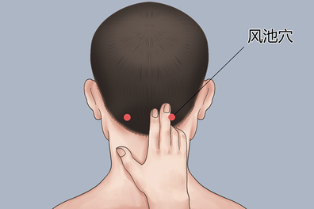
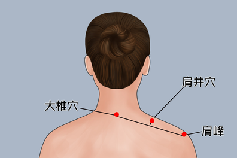
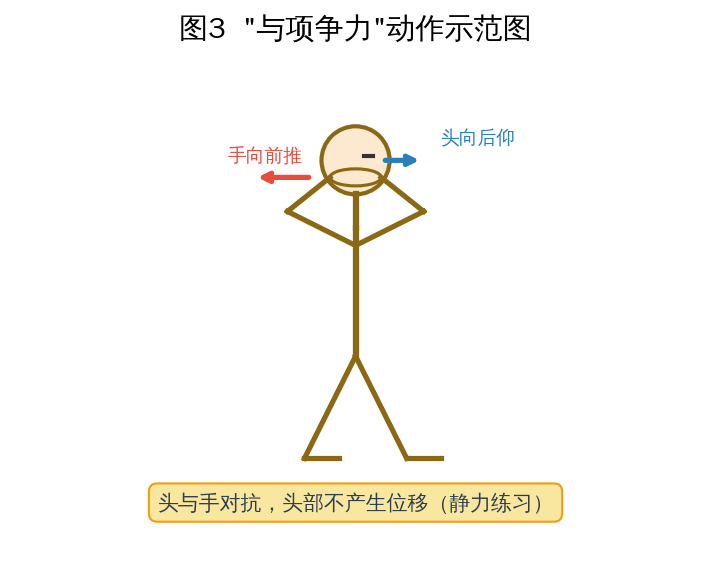
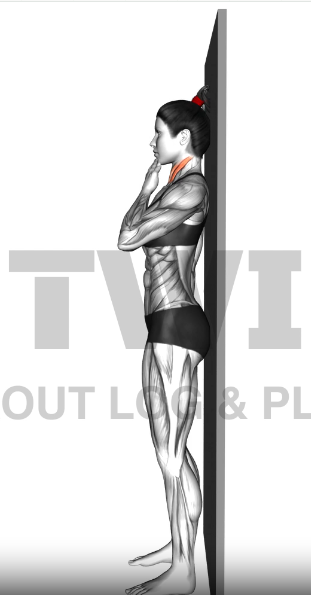
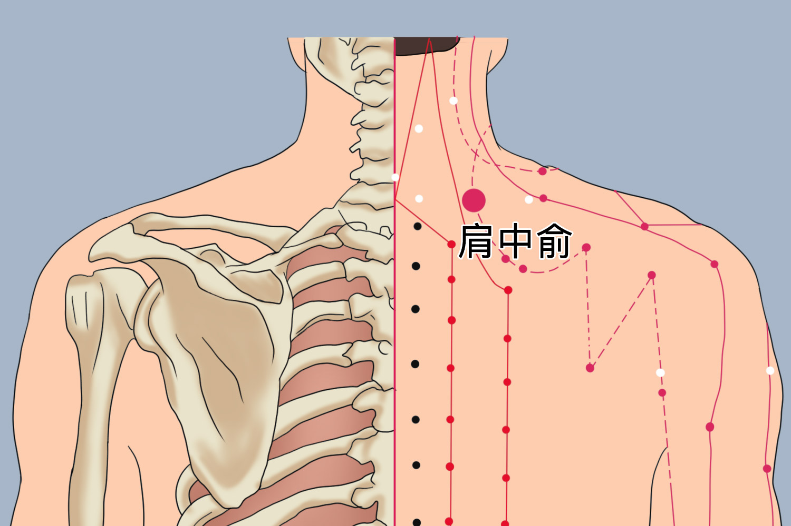
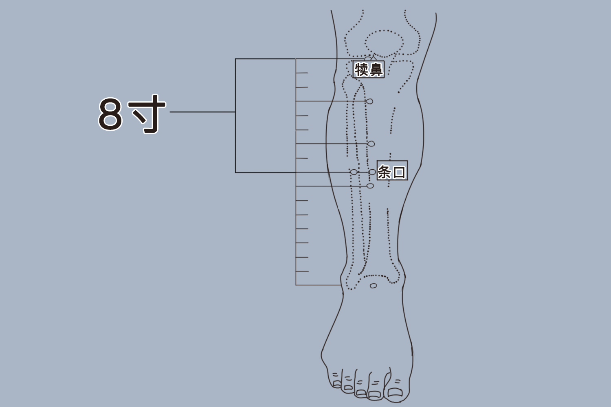

一、穴位自我按摩
风池穴
定位在后颈部，后脑勺下方两侧的凹陷处，耳后高骨与颈椎之间的缝隙内。
手法坐姿或站姿，头部微前倾。双手拇指分别按压两侧穴位，其余四指扶住头部固定。力度由轻到重，以酸胀但不刺痛为宜，按压 3 秒后松开，重复 30 次；也可用拇指与食指揉捏，每次 1—2 分钟。
作用疏通颈部经络，缓解肌肉痉挛，对长期低头导致的僵硬、牵拉痛效果明显，也能改善头部供血。

把原图保存为 fig1-fengchi.png
肩井穴
定位在肩部最高处，大椎穴（低头时颈后凸起的骨头）与肩峰连线的中点。
手法
- 按揉法：用对侧手的食指、中指并拢按压穴位，力度适中，按压后停留 2 秒再松开，单侧 30 次后换边。
- 拿肩井：拇指放在肩井穴，其余四指放在对侧，前后对应用力，做向上提捏的动作，反复操作 10 次即可。
作用放松斜方肌，改善肩部紧张与颈椎活动受限，尤其适合久坐办公族在工作间隙快速缓解僵硬。

把原图保存为 fig2-jianjing.png
按摩通用提示
- 每个穴位每次按摩一两分钟，每天可进行 2—3 次，工作间隙与睡前都是适宜时间。
- 按摩前可先缓慢转头、抬头低头各数次，让颈部肌肉先放松。
二、颈部静态力量训练
“与项争力”
准备直立或坐位，两脚分开与肩同宽。双手十指交叉，掌面置于颈椎后部正中（适合颈椎生理弧度正常、减小或反弓者）或后枕部（适合生理弧度增大者）。
动作头颈用力向后仰，双手同时向前托起对抗，头与手均不产生位移，即纯粹的静止用力。维持 3—4 秒，放松休息 3—4 秒为 1 次。
组数每组做 20 次，每日 3—5 组即可。
要点这是典型的静力性练习，力量对抗时头部不移动，重点在于颈部肌肉的持续收缩，而非活动幅度。

把原图保存为 fig3-xiangzheng.png
收下巴训练
靠墙版本：背靠墙站立，脚后跟、臀部、肩胛骨和后脑勺都轻贴墙面。缓慢做一个“双下巴”动作——想象用下巴去够脖子后的皮肤，而不是低头或抬头。保持 5 秒后放松，重复 10 次。
坐姿版本：身体坐直或站直，双眼平视前方，缓慢将下巴水平向后收，感觉颈部后侧有拉伸感，保持 5 秒后放松，重复 10 次。
核心要点：动作方向是水平向后，伴有头部微微向上延伸的感觉，而非单纯向后压。动作要轻，重点在于激活颈部深层屈肌，而不是让颈后浅层肌肉发力。

把原图保存为 fig4-shouxiaba.png
三、八段锦核心术式
“两手托天理三焦”
这一式通过充分的纵向拉伸，直接牵拉肩臂与颈项部的经络。
预备直立，双脚与肩同宽，双臂自然下垂，目视前方。
动作步骤
- 双臂弯曲，掌心向上于胸前，指尖相对。
- 双手十指交叉，翻掌使掌心向上，尽量向上托举，同时抬头目视手背，脚跟随之离地，配合深吸气。
- 还原成预备姿势，同时深呼气。
对肩颈的作用上托至极时，脊柱得到充分伸展，肩臂与十指被撑拉，能拉开从胸走手的手三阴经与从手走头的三阳经，对肩颈部的经络气血有直接的疏通作用。
“五劳七伤往后瞧”
这一式是八段锦中对颈肩锻炼效果最直接的招式之一。
预备双腿直立，比肩略宽，两臂自然下垂，目视前方。
动作步骤
- 保持上体不动，头颈带动脊柱缓缓向左（或右）后方拧转，双目尽量看向斜后方。
- 同时两手掌向后翻，配合转头动作，身体不要跟着转，只转动头颈。
- 保持 3—5 秒，然后轻轻还原，双掌扶于胸前。
呼吸配合转头后瞧时配合吸气，还原时配合呼气，全身放松。左右交替，重复 4—8 次。
对肩颈的作用通过头颈的拧转，能有效牵拉滑利肩颈部关节，拉伸胸廓，增强脊柱的灵活性，对颈椎的旋转功能有直接锻炼价值。

四、练习注意事项
力度与安全
- 穴位按摩以“酸胀不痛”为原则，避免暴力按压。
- 孕妇禁用肩井穴，以免引发宫缩。
- 若颈部疼痛伴随手臂麻木、无力、行走不稳，或存在严重骨质疏松、颈椎骨折、局部皮肤感染等情况，不宜自行按摩或练习，应及时就医排查。
日常配合
- 每工作 30—40 分钟，起身做一次收下巴动作和扩胸运动；睡前可用热毛巾敷颈部后方 10—15 分钟，帮助放松肌肉。
- 注意颈部保暖，避免空调、风扇直吹颈后。
- 使用手机或电脑时尽量保持屏幕与视线平行，减少低头角度。
练习顺序建议
先做穴位按摩放松浅层肌肉，再进行静态力量训练激活颈部深层稳定肌群，最后以八段锦的伸展动作收尾，整体效果会更完整。
拓展穴位按摩教程
肩中俞穴
定位在背部，第 7 颈椎棘突下旁开 2 寸（约两横指宽）。
手法用一手绕过胸前置于对侧肩上，食指和中指并拢，按揉该穴位，以局部有明显酸痛感为宜。
作用处于肩脊中部，能舒筋活络、通经止痛，对颈项僵硬、肩背疼痛有缓解作用。

把原图保存为 fig7-jianzhongshu.png
条口穴
定位在小腿外侧，续鼻穴（外膝眼）下 8 寸，续鼻与解溪的连线上。
手法用拇指指腹或指关节按压，力度轻柔有度，每次按揉约 3 分钟即可。可在点按的同时，缓慢活动颈项（左右转头、抬头低头），效果更佳。
作用这是一个“上病下取”的远端穴位，能调整全身气血运行，对肩部发沉、肩周炎、颈项活动受限有辅助改善作用。

把原图保存为 fig8-tiaokou.png